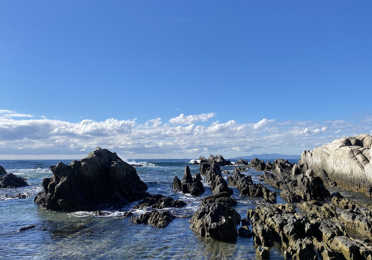
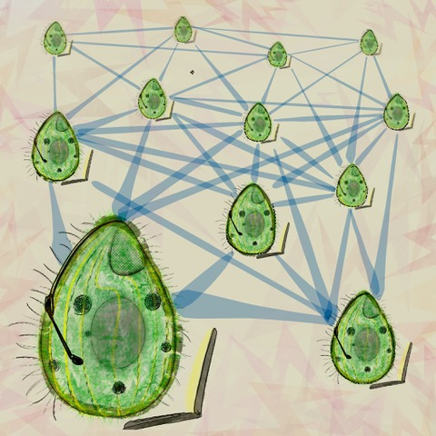
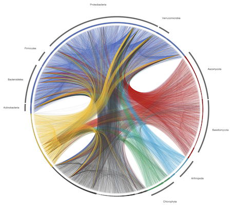
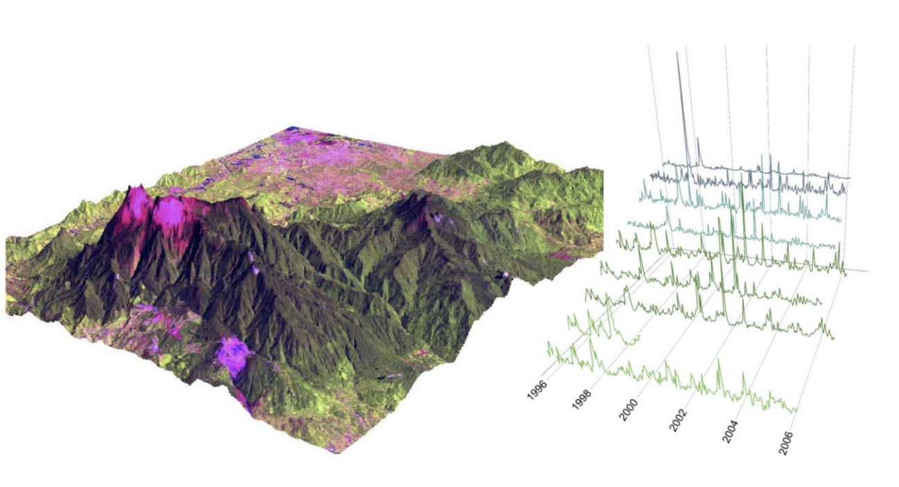
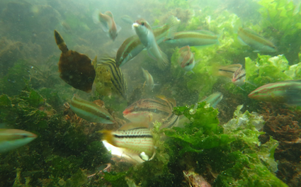
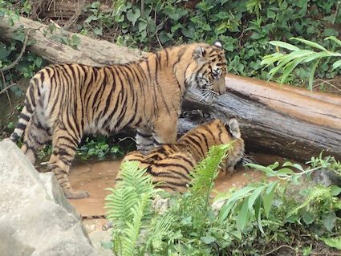
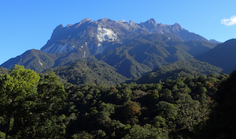
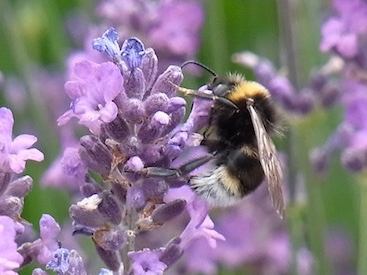
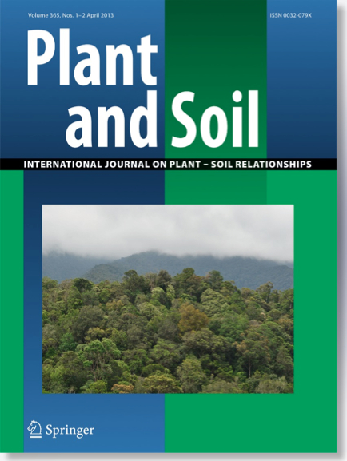

査読付原著論文
- Osada Y*, Ushio M, Kondoh M (2023)
Unified understanding of nonparametric causality detection in time series.
- Fujita H*, Ushio M, Suzuki K, Abe MS, Yamamichi M, Okazaki Y, Canarini A, Hayashi I, Fukushima K, Fukuda S, Kiers ET, Toju H* (2023) Metagenomic analysis of ecological niche overlap and community collapse in microbiome dynamics.
Manuscripts under review/revision
- 潮雅之*, 中嶋浩平 (in press)
リザバーコンピューティング: 原理と生態学における応用可能性
日本生態学会誌 - Maxime M*, Ushio M, Sakai S. (2022)
The effects of the floral infection by a bacterial pathogen in a dioecious plant, Mallotus japonicus (Euphorbiaceae)
Population Ecology (early view) - Ushio M*, Saito H, Tojo M, Nagano AJ (2023)
An ecological network approach for detecting and validating influential organisms for rice growth
eLife 12:RP87202
- Ushio M*, Sado T, Fukuchi T, Sasano S, Masuda R, Osada Y, Miya M* (2023)
Temperature sensitivity of the interspecific interaction strength of coastal marine fish communities
eLife 12:RP85795
 房総半島の採水地点の一つ (c) M. Miya
・以下のサイトで紹介されています: EukAlert!, 香港科技大学プレスリリース, 京都大学プレスリリース, 東北大学プレスリリース, Croucher Foundation
- Yoneya K*, Ushio M, Miki T (2023)
Non-destructive collection and metabarcoding of arthropod environmental DNA remained on a terrestrial plant
Scientific Reports 13:7125
- Jiang L*, Ushio M, Kitayama K (2023)
Changes of soil chemical properties, microbial biomass and enzymatic activities along a gradient of forest degradation in logged over tropical rain forests, Borneo
Plant and Soil 485:525–536 - Ushio M*, Watanabe K, Fukuda Y, Tokudome Y, Nakajima K* (2023)
Computational capability of ecological dynamics
Royal Society Open Science 10:221614

人工ネットワークを生物によるネットワークに置き換えて計算が可能であることを実証 (credit:KyotoU/Jake Tobiyama) ・bioRxiv 版が New Scientist で紹介されました (英語)
・bioRxiv 版が Focus.pl で紹介されました (ポーランド語)
- Fujita H*, Ushio M, Suzuki K, Abe MS, Yamamichi M, Okazaki Y, Canarini A, Hayashi I, Fukushima K, Fukuda S, Kiers ET, Toju H* (2023)
Facilitative interaction networks in experimental microbial community dynamics
Frontiers in Microbiology 14:1153952
- Fujita H*, Ushio M, Suzuki K, Abe MS, Yamamichi M, Iwayama K, Canarini A, Hayashi I, Fukushima K, Fukuda S, Kiers ET, Toju H* (2023)
Alternative stable states, nonlinear behavior, and predictability of microbiome dynamics
Microbiome 11:63
- Fukasawa Y*, Akai D, Ushio M, Takehi T (2023)
Electrical potentials in the ectomycorrhizal fungus Laccaria bicolor after a rainfall event
Fungal Ecology 63:101229
- Tsujii Y*, Sakai S, Ushio M, Aiba S-I, Kitayama K (2023)
Variations in the reproductive cycle of Bornean montane tree species along elevational gradients on ultrabasic and non-ultrabasic soils
Biotropica 55 (1):210–220 - Ushio M*, Furukawa S, Murakami H, Masuda R, Nagano AJ* (2022)
An efficient early-pooling protocol for environmental DNA metabarcoding
Environmental DNA 4 (6):1212–1228
- Inoue N*, Sato M, Furuichi N, Imaizumi T, Ushio M (2022)
The relationship between eDNA density distribution and current fields around an artificial reef in the waters of Tateyama Bay, Japan
Metabarcoding & Metagenomics 6:e87415 - Fukasawa Y*, Matsukura K, Stephan JG, Makoto K, Suzuki SN, Kominami Y, Takagi M, Tanaka N, Takemoto S, Kinuura H, Okano K, Song Z, Jomura M, Kadowaki K, Yamashita S, Ushio M (2022)
Patterns of community composition and diversity in latent fungi of living Quercus serrata trunks across a range of oak wilt prevalence and climate variables in Japan
Fungal Ecology 59:101095 - Elvira NJ, Ushio M, Sakai S* (2022)
Are microbes growing on flowers evil? Effects of old flower microbes on fruit set in a wild ginger with one-day flowers, Alpinia japonica (Zingiberaceae)
Metabarcoding & Metagenomics 6:e84331
- Maxime M*, Ushio M, Sakai S. (2022)
Contrasting microbial communities on male and female flowers of a dioecious plant, Mallotus japonicus (Euphorbiaceae)
Environmental DNA 4 (3):565–579 - Ushio M* (2022)
Interaction capacity as a potential driver of community diversity
Proceedings of the Royal Society B 289: 20212690

環境 DNA モニタリングデータを元に再構成した種間相互作用ネットワーク プレスリリース: 京都大学 HP, 詳しい内容 (PDF), - Chang CW, Miki T, Ushio M, Ke PJ, Lu HP, Shiah FK, Hsieh CH* (2021)
Reconstructing large interaction networks from empirical time series data
Ecology Letters 24 (12):2763–2774
- Sato M*, Inoue N, Nambu R, Furuich N, Imaizumi T, Ushio M (2021)
Quantitative assessment of multiple fish species around artificial reefs using environmental DNA metabarcoding
Scientific Reports 11:19477
- Matsuoka S*, Sugiyama Y, Shimono Y, Ushio M, Doi H (2021)
Evaluation of seasonal dynamics of fungal DNA assemblages in a flow-regulated stream in a restored forest using eDNA metabarcoding
Environmental Microbiology 23 (8):4797–4806
- Doi H*, Yasuhara M*, Ushio M* (2021)
Causal analysis of the temperature impact on deep-sea biodiversity
Biology Letters 17 (7):20200666 - 白垣友寛, 井上拓, 福田秀樹, 潮雅之, 日下美樹, 岡野孝哉, 高巣裕之* (2021)
海洋堆積物に残存する環境DNAを用いた魚類相把握の試み
水環境学会誌 44 (4):79–84 - Kawatsu K, Ushio M, van Veen F, Kondoh M* (2021)
Are networks of trophic interactions sufficient for understanding the dynamics of multi-trophic communities? Analysis of a tri-trophic insect food-web time-series
Ecology Letters 24 (3):543–552 - Kitayama K*, Ushio M*, Aiba S-I (2021)
Temperature is a dominant driver of distinct annual seasonality of leaf litter production of equatorial tropical rain forests
Journal of Ecology 109 (2):727–736

キナバル山と標高別の葉リターの時系列データ プレスリリース: 京都大学 HP, 詳しい内容 (PDF) - Yonezawa S, Ushio M*, Yamanaka H, Miya M, Takayanagi A, Isagi Y* (2020)
Environmental DNA metabarcoding reveals the presence of a small, quick-moving, nocturnal water shrew in a forest stream
Conservation Genetics 21 (6):1079–1084 - Tsuji S*, Shibata N, Sawada H, Ushio M (2020)
Quantitative evaluation of intraspecific genetic diversity in a natural fish population using environmental DNA analysis
Molecular Ecology Resources 20 (5):1323–1332 - Tsuji, S*, Maruyama A, Miya M, Ushio M, Sato H, Minamoto T, Yamanaka H (2020)
Environmental DNA analysis shows high potential as a tool for estimating intraspecific genetic diversity in a wild fish population
Molecular Ecology Resources 20 (5):1248–1258
- Cai J, Hodoki Y, Ushio M, Nakano S-I* (2020)
Influences of potential grazers on picocyanobacteria abundances in Lake Biwa revealed by empirical dynamic modeling
Inland Water 10 (3):386–396 - Ushio M* (2020) [Special Feature]
Idea paper: Predicting culturability of microbes from population dynamics under field conditions
Ecological Research 35 (4):586–590
- Nishio H*, Buzas DM, Nagano AJ, Iwayama K, Ushio M, Kudoh H* (2020)
Repressive chromatin modification underpins the long-term expression trend of a perennial flowering gene in nature
Nature Communications 11:2065 - Shirouzu T*, Matsuoka S, Doi H, Nagata N, Ushio M, Hosaka K (2020)
Complementary molecular methods reveal a comprehensive phylogenetic diversity with integrating invisible lineages of early-diverged mushrooms
Scientific Reports 10:3057 - Ushio M*, Osada Y, Kumagai T, Kume T, Pungga RS, Nakashizuka T, Itioka T, Sakai S* (2020)
Miyadi Award Paper
Dynamic and synergistic influences of air temperature and rainfall on general flowering in a Bornean lowland tropical forest
Ecological Research 35 (1):17–29
- Tsuji S*, Miya M, Ushio M, Sato H, Minamoto T, Yamanaka H (2020)
Evaluating intraspecific genetic diversity using environmental DNA and denoising approach: A case study using tank water
Environmental DNA 2 (1): 42–52
- Ushio M* (2019)
Use of a filter cartridge combined with intra-cartridge bead-beating improves detection of microbial DNA from water samples
Methods in Ecology and Evolution 10 (8):1142–1156
- Nakagawa M, Ushio M, Kume T, Nakashizuka T (2019)
Seasonal and long-term patterns in litterfall in a Bornean tropical rainforest
Ecological Research 34 (1): 31–39 - Toju H*, Peay KG, Yamamichi M, Narisawa K, Hiruma K, Naito K, Fukuda S, Ushio M, Nakaoka S, Onoda Y, Yoshida K, Schlaeppi K, Bai Y, Sugiura R, Ichihashi Y, Minamisawa K, Kiers ET (2018)
Core microbiomes for sustainable agroecosystems
Nature Plants 4: 247–257 - Ushio M*, Murata K, Sado T, Nishiumi I, Takeshita M, Iwasaki W, Miya M* (2018)
Demonstration of the potential of environmental DNA as a tool for the detection of avian species
Scientific Reports 8: 4493
- Ushio M*, Murakami H, Masuda R, Sado T, Miya M, Sakurai S, Yamanaka H, Minamoto T, Kondoh M (2018)
Quantitative monitoring of multispecies fish environmental DNA using high-throughput sequencing
Metabarcoding & Metagenomics 2: e23297
- Ushio M*, Hsieh CH, Masuda R, Deyle RE, Ye H, Chang CW, Sugihara G, Kondoh M* (2018)
Fluctuating interaction network and time-varying stability of a natural fish community
Nature 554 (7692): 360–363
 相互作用する魚たち © R. Masuda
論文へのフリーリンク: SharedIt link (read only)
紹介ブログ: Nature Ecology & Evolution, Behind the Paper
プレスリリースなど: 京都大, Kyoto Univ (英語版), 京大フィールド研, 龍谷大, 科学技術振興機構, 東北大, 國立台灣大学
新聞記事など: EurekAlert!, ScienceDaily, PHYS.ORG, 京都新聞, 日本経済新聞, 環境展望台 (国立環境研究所), Yahoo! ニュース - 相場慎一郎*, 宮本和樹, 潮雅之, 青柳亮太, 澤田佳美 (2017)
陸上生態系において球果類の優占度を決定するメカニズム
日本生態学会誌 67 (3): 355–360 - 潮雅之* (2017)
マキ科・ナンヨウスギ科の根の形態・菌根菌・窒素固定活性
日本生態学会誌 67 (3): 339–345 - Ushio M*, Fukuda H, Inoue T, Makoto K, Kishida O, Sato K, Murata K, Nikaido M, Sado T, Sato Y, Takeshita M, Iwasaki W, Yamanaka H, Kondoh M, Miya M* (2017)
Environmental DNA enables detection of terrestrial mammals from forest pond water
Molecular Ecology Resources 17 (6): e63–e75
 水を飲むトラの子供 © M. Ushio プレスリリース: 千葉県立中央博物館, 龍谷大, 東京農大
テレビ・新聞記事: NHK News Web, 毎日新聞 (千葉), 千葉日報, 朝日新聞 - Chang CW*, Ushio M*, Hsieh CH* (2017)
Empirical dynamic modeling for beginners
Ecological Research 32 (6): 785–796 - Ishige T, Miya M, Ushio M, Sado T, Ushioda M, Yonechi R, Lagan P, Matsubayashi H* (2017)
Tropical-forest mammals as detected by environmental DNA at natural saltlicks
Biological Conservation 210: 281–285 - Tsuji S*, Ushio M, Sakurai S, Minamoto T, Yamanaka H (2017)
Water temperature-dependent degradation of environmental DNA and its relation to bacterial abundance
PLoS ONE 12 (4) e0176608 - Ushio M*, Aiba S-I, Takeuchi Y, Iida Y, Matsuoka S, Repin R, Kitayama K (2017)
Plant-soil feedbacks and the dominance of conifers in a tropical montane forest in Borneo
Ecological Monographs 87 (1): 105–129
 ボルネオ島キナバル山 © M. Ushio キナバル山熱帯山地林で 2005 年から行ってきた一連の研究の総まとめとなる論文です - Koyama K*, Yamamoto K, Ushio M (2017)
A lognormal distribution of the lengths of terminal twigs on self-similar branches of elm trees
Proceedings of the Royal Society B 284: 20162395 - Sakai S*, Keong CY, Koizumi M, Kishimoto-Yamada K, Takano KT, Ichikawa M, Samejima H, Kato Y, Soda R, Ushio M, Saizen I, Nakashizuka T, Itioka T (2016)
Social and ecological factors associated with the use of non-timber forest products by people in rural Borneo
Biological Conservation 204: 340–349 - Ohba S-Y*, Ushio M (2015)
Effect of water depth on predation frequency by diving beetles on mosquito larvae prey
Entomological Science 18 (4): 519–522 - Ushio M*, Fujiki Y, Hidaka A, Kitayama K* (2015)
Linkage of root physiology and morphology as an adaptation to soil phosphorus impoverishment in tropical montane forests
Functional Ecology 29 (9): 1235–1245 - Takasu H, Ushio M, LeClair JE, Nakano S-I* (2015)
High contribution of Synechococcus to phytoplankton biomass in the aphotic hypolimnion in a deep freshwater lake (Lake Biwa, Japan)
Aquatic Microbial Ecology 75 (1): 69–79 - Ushio M*, Yamasaki E, Takasu H, Nagano AJ, Honjo MN, Fujinaga S, Ikemoto M, Sakai S, Kudoh H (2015)
Microbial communities on flower surfaces act as signatures of pollinator visitation
Scientific Reports 5: 8695
 ラベンダーを訪れるセイヨウマルハナバチ © E. Yamasaki 「Scientific Reports 注目の論文」に選定されました！ - Katayama N*, Silva AO, Kishida O, Ushio M, Kita S, Ohgushi T (2014)
Herbivorous insect decreases plant nutrient uptake: the role of soil nutrient availability and association of below-ground symbionts
Ecological Entomology 39 (4): 511–518 - Ushio M*, Makoto K, Klaminder J, Takasu H, Nakano S-I (2014)
High-throughput sequencing shows inconsistent results with a microscope-based analysis of the soil prokaryotic community
Soil Biology & Biochemistry 76: 53–56 - Ushio M*, Miki T, Balser TC (2013)
A coexisting fungal-bacterial community stabilizes soil decomposition activity in a microcosm experiment
PLoS ONE 8 (11) e80320 - Ushio M*, Makoto K, Klaminder J, Nakano S-I (2013)
CARD-FISH analysis of prokaryotic community composition and abundance along small-scale vegetation gradients in a dry arctic tundra ecosystem
Soil Biology & Biochemistry 64: 147–154 - Nakazawa T*, Ohba S-Y, Ushio M (2013)
Predator-prey body size relationships when predators can consume prey larger than themselves
Biology Letters 9 (3) no. 20121193 - Ushio M*, Balser TC, Kitayama K (2013)
Effects of condensed tannins in conifer leaves on the composition and activity of soil microbial community in a tropical montane forest
Plant and Soil 365 (1-2): 157–170

キナバル山熱帯山地林の写真が表紙に採用されました！ - Koyama K*, Hidaka Y, Ushio M (2012)
Dynamic scaling in the growth of a non-branching plant, Cardiocrinum cordatum
PLoS ONE 7 (9) e45317
- Ushio M, Adams JM* (2011)
A meta-analysis of the global distribution pattern of condensed tannins in tree leaves
The Open Ecology Journal 4: 18–23
- Takeuchi Y, Salcher MM, Ushio M, Shimizu-Inatsugi R, Kobayashi MJ, Diway B, von Mering C, Pernthaler J, Shimizu KK* (2011)
In situ enzyme activity in the dissolved and particulate fraction of the fluid from four pitcher plant species of the genus Nepenthes
PLoS ONE 6 (9) e25144
- Ushio M*, Kitayama K, Balser TC (2010)
Tree species-mediated spatial patchiness of the composition of microbial community and physicochemical properties in the topsoils of a tropical montane forest
Soil Biology & Biochemistry 42 (9):1588–1595
- Miki T*, Ushio M, Fukui S, Kondoh M (2010)
Functional diversity of microbial decomposers facilitates plant coexistence in a plant-microbe-soil feedback model
PNAS 107 (32): 14251–14256
- Ushio M*, Kitayama K, Balser TC (2010)
Tree species effects on soil enzyme activities through effects on soil physicochemical and microbial properties in a tropical montane forest on Mt. Kinabalu, Borneo
Pedobiologia 53 (4): 227–233
- Ushio M*, Miki T, Kitayama K (2009)
Phenolic control of plant nitrogen acquisition through the inhibition of soil microbial decomposition processes: A plant-microbe competition model
Microbes and Environments 24 (2): 180–187
- Ushio M*, Wagai R, Balser TC, Kitayama K (2008)
Variations in the soil microbial community composition of a tropical montane forest ecosystem: Does tree species matter?
Soil Biology & Biochemistry 40 (10): 2699–2702
In press/early view
2023
2022
2021
2020
2019
2018
2017
2016
2015
2014
2013
Before 2012
: This symbol is downloaded from this website and distributed under Creative Commmons Atribution Liscence (CC BY 2.0) (see also this Wikipedia page).
本など
- Ushio M*, Kawatsu K (2020)
Forecasting ecological time series using empirical dynamic modeling: a tutorial for simplex projection and S-map. DOI:10.1007/978-981-15-7953-0_9. In Mougi A ed. "Diversity of Functional Traits and Interactions". pp.193–213 Springer, Singapore. - Kondoh M*, Kawatsu K, Osada Y, Ushio M (2020)
A data-driven approach to complex ecological systems. DOI:10.1093/oso/9780198824282.003.0008. In McCann K.S. & Gellner G eds. "Theoretical Ecology: concepts and applications". pp. 117–122. Oxford University Press, Oxford, UK. - Kitayama K*, Aiba S-I, Ushio M, Seino T, Fujiki Y (2011)
The ecology of podocarps in tropical montane forests of Borneo: distribution, population dynamics, and soil nutrient acquisition. Smithsonian Contributions to Botany 95 pp.101–117. In Turner, B.L. & Cernusak, L.A. eds. "Ecology of the Podocarpaceae in Tropical Forests". Smithsonian Institution Scholarly Press, Washington D.C. - Nakazawa T, Ushio M, Kondoh M* (2011)
Scale-dependence of predator-prey body-mass ratio: determinants and applications. Advances in Ecological Research 45 pp.269–302. In Belgrano, A. and Reiss, J. eds. "The Role of Body Size in Multispecies Systems". Academic Press, Amsterdam, The Netherlands
TN and MU equally contributed to this work.
特許
- 平成30年9月18日出願 特願2018-173812
潮雅之 ｢破砕ビーズを利用したカートリッジ型ろ過フィルターからの微生物DNAの効率的抽出｣
- 平成30年4月18日出願 特願2018-79640 特開2019-191630
令和4年5月17日査定
潮雅之 ｢強く同期した周期性を持つ時系列データ間の因果関係を検出する解析手法｣
その他
- 武方宏樹･相場慎一郎･中林雅･野津了･古川真央･田中良弥･潮雅之 (2022)
｢南の生物と時間｣ 時間生物学 vol.28 pp.9–16 - 潮雅之 (2021) (分担執筆)「5.6 哺乳類の検出」
一般社団法人 環境DNA学会（企画）土居秀幸･近藤倫生（編）『環境DNA – 生態系の真の姿を読み解く –』 pp.204–216 共立出版 - 海洋と生物 234 Vol. 40 (1) 特集「環境 DNA が拓く魚類生態研究の未来 」 「次世代シーケンサーと内部標準 DNA を利用した魚類環境 DNA の網羅的・定量的モニタリング」(pp.40–46) 潮雅之
- 水産海洋研究 81 (4) 第47回北洋研究シンポジウム –環境 DNA を用いた水産生物のモニタリング– 「大量シーケンスと標準 DNA を利用した魚類環境 DNA の網羅的・定量的モニタリング:京都府舞鶴湾での解析事例」(pp.305–307) 潮雅之
- iOSアプリを開発しました (2014.1). 日本の生態学者 (for iPhone/iPad)
・詳しくはApp Store を御覧ください.
・(現在は配信されていません：2014年10月追記) - 生態学研究センターニュース 第118号（2012年11月号）p.11
センター員の研究紹介「土壌の微生物を光らせる」潮雅之 - 北山兼弘, 潮雅之, 和穎朗太 (2007)
「熱帯降雨林の生態系－樹木と微生物の協奏曲」 京都大学総合博物館・生態学研究センター（編）『生物の多様性ってなんだろう？－生命のジグソーパズル－』 pp.250–272 京都大学学術出版会
受賞など
- 2021.4 令和3年度 科学技術分野の文部科学大臣表彰 若手科学者賞
- 2018.3 第22回日本生態学会 宮地賞
- 2014.3 第61回日本生態学会 英語口頭発表 Best Award (Microbial and Ecosystem Ecology section)
- 2009.3 第56回日本生態学会 ポスター発表優秀賞（物質生産・物質循環部門）
- 2008.3 第55回日本生態学会 ポスター発表最優秀賞（物質循環部門）
- 2007.2 第3回日本生態学会近畿地区会 奨励賞
学会発表
科学雑誌、研究費プロポーザルの査読経験
African Journal of Agricultural Research, African Journal of Biotechnology, African Journal of Microbiology Research, Agricultural Science, Applied Soil Ecology, Australian Journal of Botany, Communications Biology, Ecological Entomology, Ecological Indicators, Ecological Research, Ecology, Ecology Letters, Ecosystems, Ecosphere, eLife, Environmental DNA, European Journal of Soil Science, Fisheries Science, Forest Ecology and Management, Geoderma, Genes & Genetic Systems, Journal of Animal Ecology, Journal of Applied Microbiology, Journal of Arid Land, Journal of Forest Research, Metabarcoding & Metagenomics,, Microbial Ecology, Molecular Ecology Resources, Nature Climate Change, Nature Communications, Plant and Soil, PLoS ONE, Population Ecology, Proceedings of the Royal Society B, The Research Foundation Flanders (FWO), Review of Palaeobotany and Palynology, Science of the Total Environment, Scientific Reports, National Scientific Research Fund (F.R.S.-FNRS) (Belgium), Soil Biology & Biochemistry, Soil Research, Soil Science and Plant Nutrition, 日本生態学会誌, 黒潮圏科学